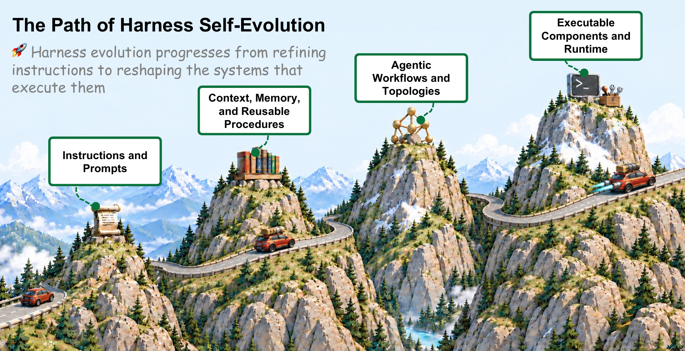
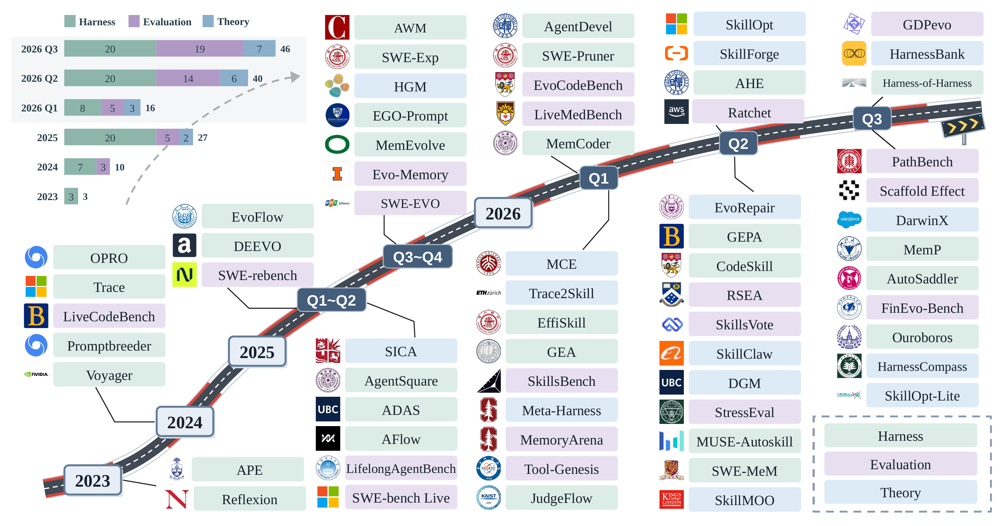
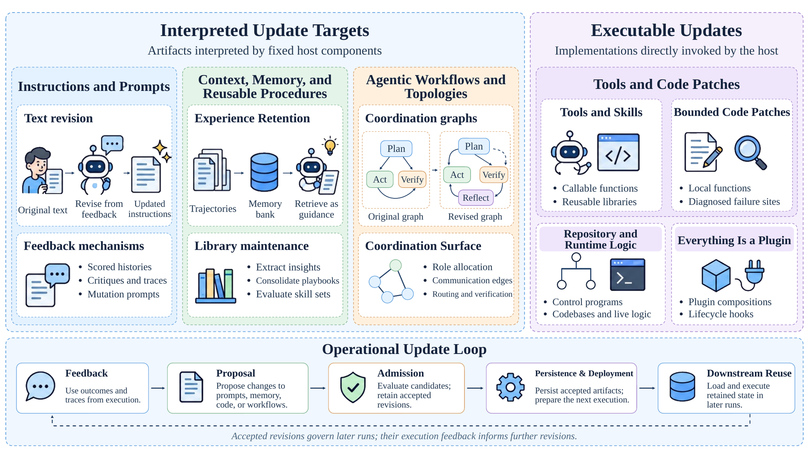
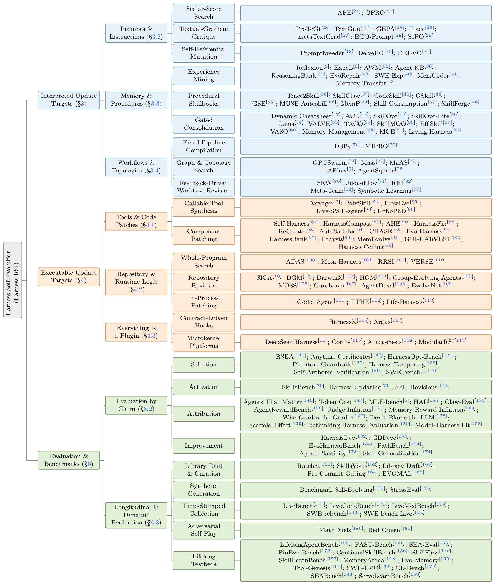
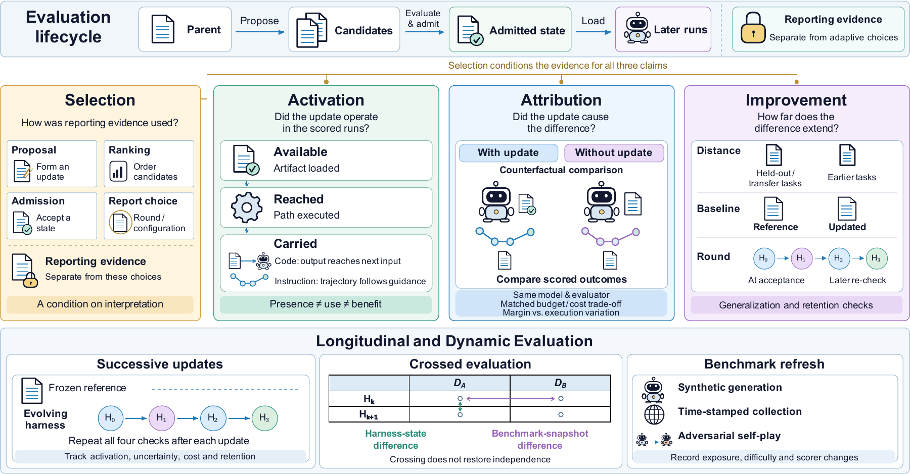
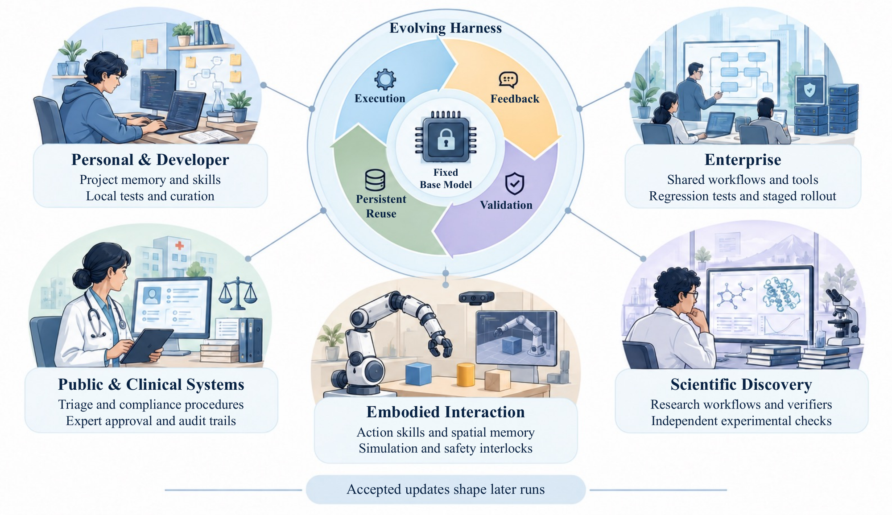
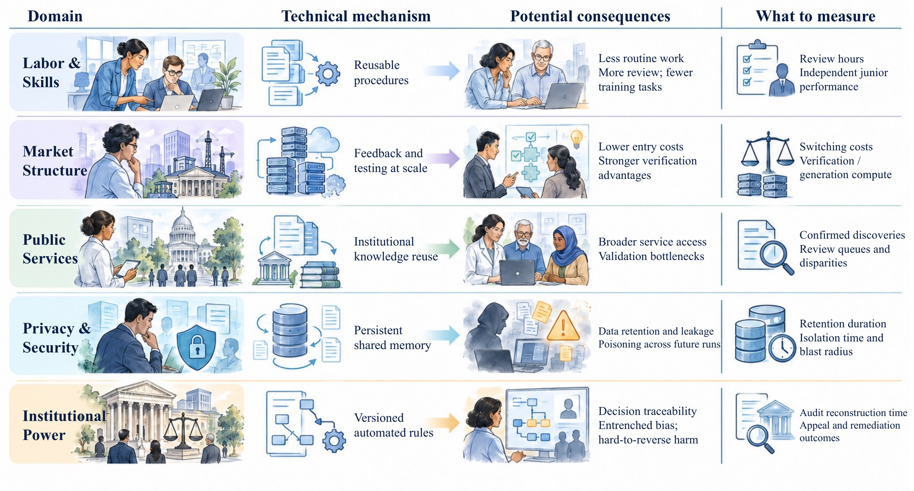

Zeroth-order Optimization
Search over programs using task scores and execution feedback, without gradients.
Survey / Working draft / October 2026
Theory, Algorithms, Evaluation, Applications, and Impact
Agents that revise their instructions, memory, workflows, and code while the base model stays fixed.

Execution feedback can improve an agent’s harness without changing its model weights. This survey connects update mechanisms, theory, and evidence of improvement.

Figure 2. Research growth and representative systems, grouped by primary emphasis.
Execution feedback revises the harness \(H\) around a fixed model \(M\). Accepted changes persist across runs, and later experience can trigger further updates.
Run the current harness.
Collect a batch of trajectories.
Use that feedback to revise the harness.
\(\tau\): trajectory · \(E\): environment · \(b\): batch size
Model and evaluator stay fixed; rejected updates keep \(H_k\).
Two update targets: content the model reads and code the host executes. Select a mechanism to browse its papers.

Figure 4. Harness update targets and the operational loop.

How are revisions found, and when do they transfer? Three connected theoretical perspectives.
Search over programs using task scores and execution feedback, without gradients.
Propose variations, evaluate candidates, and retain useful revisions or diverse alternatives.
Study generalization, retention, and reliable admission under explicit sampling assumptions.
A reported gain needs evidence of independent selection, actual use, causal attribution, and generalization.
Reporting-task outcomes never guide proposal, ranking, admission, or round and configuration choice.
Direct traces show the update operated in scored runs, with coverage recorded.
Controlled comparisons isolate the update’s effect beyond execution noise.
Gains extend beyond update-forming tasks, with the baseline and round specified.

Figure 5. Four claims and the controls needed across update rounds.
96 methods; 94 scored reports, using one headline comparison per evaluated method. Ratings describe reported evidence within its recorded coverage.
94 reports. Full Activation can rest on one confirmed case; coverage is recorded separately.
Number of claims supported by full evidence.
Activation and attribution remain the main evidence gaps. A held-out gain at one round also leaves long-term retention unresolved.
From personal workspaces to science and public services, key challenges are efficient search, retention, dynamic evaluation, and oversight.

Figure 7. Deployment requirements across five settings.

Figure 8. Hypothesized pathways, without established causal estimates.
Search papers and mechanisms. Evidence markers follow Selection · Activation · Attribution · Improvement.
BibTeX for the current working draft.
@misc{wei2026harnessrsi, title = {{Harness Self-Evolution: Theory, Algorithms, Evaluation, Applications, and Impact}}, author = {Wei, Chuyang and Guan, Haoxiang and Zhu, Minghang and Zhou, Kexin and He, Jiyan and Shen, Yifei}, year = {2026}, note = {Working draft}, url = {https://github.com/zgcagi/Harness-RSI} }